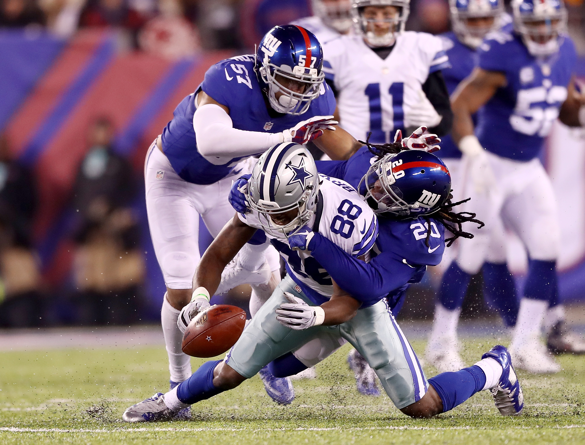

Hello fantasy owners, it's week 3 and you’re either off to a great start this season or stinking up the place, finding yourselves in a must win situation to stay afloat in your division’s standings. Regardless of the situation you've found yourself in I am here to guide you to a week 3 victory!
Obvious starters like Aaron Rodgers or Antonio Brown will not be mentioned.
Start em Sit em Quarterbacks
Start em
Matthew Stafford
6 Passing Touchdowns so far this season, the highest paid Qb in football looks to continue his 2017 campaign against Atlanta who will be without last years league leader in sacks, Vic Beasley. (15.5 sacks last year) Atlanta is one of the best offenses in the league and Detroit will be forced to keep up, which means lots of passing for Stafford. This has the potential to be a shootout, start Stafford with confidence in Week 3.
Derek Carr
Already the #6 Quarterback in fantasy through 2 weeks of play, if you drafted him you're satisfied with his recent results. Expect another solid week from the second round standout from Fresno State against the Redskins, who gave up a big game to Carson Wentz in week 2.
Sit em
Russell Wilson
Once a consistent top 5 fantasy Qb, Wilson has failed to throw for 200 yards in a game through the season’s first 2 weeks. This is in large part due to Seattle’s offensive line being a mess. I wouldn't put him in my lineup until their offense gets figured out regardless of the matchup.
Jameis Winston
The 3rd year signal caller will be going up against a very stout Vikings defense in week 3. With the Buccaneers still waiting on Doug Martin and his suspension along with Minnesota's shutdown corner Xavier Rhodes who’s looking to limit Mike Evans, Winston’s outlook is limited. Minnesota held Drew Brees to 1 touchdown and only 15 fantasy point in week 2. Winston isn't a top 10 option at the position for week 3.
Start em Sit em Running Backs and Receivers
Start em
CJ Anderson
Cj Anderson is second in the NFL with nearly 25 touches a game. He has a solid matchup with the Bills who rank closer towards the bottom half in the league in limiting running backs fantasy outputs. Due to the big workload, Cj Anderson is a high end rb2 for week 3.
Joe Mixon
If you are looking for a sleeper flex play Joe Mixon’s breakout week could be this one against Green Bay. Their offense has been absolutely terrible failing to score a td in the first 2 games of the season and their offensive coordinator just got fired so they'll be looking to gameplan differently. This should mean more touches for Joe Mixon in a Bengals effort to avoid falling to 0-3 on the season.
Kelvin Benjamin
It's 2017 and guess what? The Saints defense is still terrible. They went after an old running back instead of fixing the problem they’ve had for years. Greg Olsen is on IR for Carolina so look for Benjamin’s targets to increase against one of the worst defenses in football.
Sit em
Adrian Peterson
The Saints were already a heavy pass first team and AP is in a running back committee for most likely the rest of the season. He offers no receiving production and has ran poorly in his first 2 games as a Saint. Keep him on your bench in week 3 vs Carolina.
 Alshon Jeffery is a risky start against All-Pro Janoris Jenkins for Week 3.Alshon Jeffery
If healthy, Janoris “Jackrabbit” Jenkins will shadow Jeffrey in the matchup between the Eagles and Giants. Jenkins did a phenomenal job on Dez Bryant in week 1 making Jeffrey a mere desperation flex play if Jenkins is good to go.
Start em Sit em Tight Ends
Start em
Jack Doyle
The Browns are one of the worst teams in the league at defending tight ends. They allowed 2 tds from Jesse James in week 1 and 91 yards from Benjamin Watson in week 2. In fact, Cleveland has allowed 81 yards a game to TE's this season which is the 4th highest in the league. Luck’s backup loves to get the ball to his tight end as we saw last week(8 catches for 79 yards). If you're dealing with injury from the position or poor play from your original starter, Jack Doyle will be a great replacement for this week against Cleveland.
Sit em
Jimmy Graham
If Russell Wilson ends up on the sit em section it only makes sense Jimmy graham does too. Wilson just doesn't have enough time in the pocket and it’s best we wait for Seattle to get back on track offensively before we risk starting their special red zone threat against Tennessee in week 3.
Start em Sit em Tight Ends
Start em
Baltimore Ravens D/ST
The Ravens have already forced 10 turnovers and at least 4 interceptions in the past 2 games and get a date with the Jacksonville Jaguars on a Sunday morning in London. Don't miss out on a opportunity for a huge game against the turnover prone Jaguars.
Sit em
Houston Texans
They’re playing Tom Brady, so yea ...
Leave a comment in the contact section for any thoughts, questions or concerns